شبنم رضاپور
کسی که PDFها را راضی کرد محتوایشان را بیکموکاست لو بدهند.
این جزوه با استفاده از جزوهساز پاپیروس و به صورت خودکار تولید شده است. ممکن است شامل خطا یا برداشت نادرست باشد و نیازمند بررسی و بازبینی مجدد است.
در این جلسه، ساختار دیوارهٔ سلولی باکتریها، پپتیدوگلیکان، تفاوت دیوارهٔ باکتریهای گرم مثبت و گرم منفی، مکانیسم رنگآمیزی گرم و شکلهای غیرطبیعی دیواره، شامل پروتوپلاست، اسفروپلاست و اشکال L، بررسی میشود. در جلسهٔ قبل، سیتوپلاسم و اجزای آن، غشای سیتوپلاسمی و نقش آن در انتقال مواد مطرح شده بود؛ این جلسه از دیوارهٔ سلولی و اهمیت آن در تشخیص و درمان آغاز میشود.
در جلسهٔ قبل، ساختار باکتریها بررسی شد: سیتوپلاسم و اجزایی مانند گرانولها، پیگمانها، ریبوزومها و DNA خارجکروموزومی، یعنی پلاسمیدها؛ سپس غشای سیتوپلاسمی و نقش آن در انتقال مواد به داخل و خارج سلول مطرح شد. همهٔ باکتریها سیتوپلاسم و غشای سیتوپلاسمی دارند و ساختار غشای سیتوپلاسمی در باکتریها مشابه است، اما وجود پلاسمید یا پیگمان در همهٔ باکتریها یکسان نیست. بیرون از غشای سیتوپلاسمی، دیوارهٔ سلولی قرار دارد. دیواره یکی از ساختارهای اصلی تمایز باکتریهاست و بر اساس آن، باکتریها به گرم مثبت، گرم منفی و باکتریهای بدون دیواره تقسیم میشوند.
رنگآمیزی گرم یکی از نخستین قدمها برای انتخاب مسیر تشخیص در آزمایشگاه است. اگر تعداد باکتریها در نمونه زیاد باشد، میتوان مستقیماً از نمونهٔ بیمار، مانند خون یا نمونهٔ فرستادهشده از اتاق عمل، اسمیر تهیه و آن را رنگآمیزی کرد. اگر تعداد باکتریها کم باشد یا نمونه مخلوطی از چند باکتری باشد، ابتدا نمونه را کشت میدهند و سپس باکتری رشدکرده را رنگآمیزی میکنند. بنابراین، رنگآمیزی گرم را میتوان مستقیماً روی نمونه یا پس از کشت انجام داد.
نتیجهٔ رنگآمیزی مسیر آزمایشهای بعدی را تعیین میکند:
اگر رنگآمیزی اشتباه باشد، ممکن است مسیر آزمایش بهاشتباه انتخاب شود و باکتری شناسایی نشود. تفاوت دیواره در درمان نیز اهمیت دارد: بهعلت تفاوت ساختاری، برخی آنتیبیوتیکها بر گرم مثبتها اثر میکنند، اما بر گرم منفیها مؤثر نیستند و برای گرم منفیها ممکن است داروهای دیگری لازم باشد.
دیواره مانند پوستهٔ تخممرغ از غشای سیتوپلاسمی، سیتوپلاسم و اجزای داخل سلول محافظت میکند؛ در تعیین شکل باکتری، از جمله شکل کوکسی یا باسیل، نقش دارد و باکتری را در برابر فشارهای محیطی، تابش اشعه، محیطهای قندی هایپرتونیک، محیطهای نمکی، اسیدی و قلیایی و عوامل آسیبرسان دیگر محافظت میکند.
تقریباً همهٔ باکتریها، بهجز مایکوپلاسما، هالوباکترها و ترموپلاسما، دیوارهٔ سلولی دارند. هالوباکترها نمکدوستاند و در محیطهای هایپرتونیک و هایپراسموتیک زندگی میکنند. در اسلاید، ترموپلاسما بهعنوان گروهی از آرکیها ذکر شده است. در این درس دربارهٔ هالوباکترها بحث نمیشود. پروتوپلاستها و اسفروپلاستها در بخش پایانی مطرح میشوند.
استحکام دیواره عمدتاً به لایههای سخت پپتیدوگلیکان مربوط است. فشار اسمزی اغلب باکتریها، در نتیجهٔ غلظت مواد محلولی که با انتقال فعال وارد سلول میشوند، حدود ۵ تا ۲۰ اتمسفر است. نبود دیوارهای محکم و انعطافپذیر میتواند در بسیاری از محیطها به انفجار سلولی بینجامد.
در تصویر میکروسکوپ الکترونی، غشای سیتوپلاسمی، پپتیدوگلیکان و بخشهای دیگر پوشش سلولی گرم مثبت و گرم منفی نشان داده شدهاند. در هر دو، غشای سیتوپلاسمی در سمت داخل قرار دارد و پپتیدوگلیکان بیرون آن است؛ در گرم مثبت، لایهٔ پپتیدوگلیکان ضخیم است و در گرم منفی، لایهای نازکتر قرار دارد که بیرون آن غشای خارجی دیده میشود. بنابراین، ساختارها تا غشای سیتوپلاسمی مشابهاند، اما بخش بیرون از آن در گرم مثبت و گرم منفی تفاوت دارد.
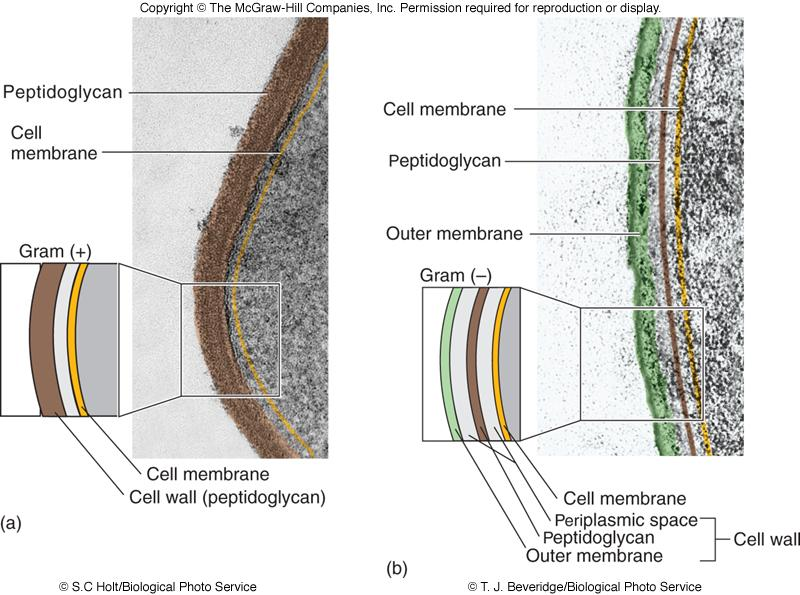
تصویر 2بخش عمدهٔ دیوارهٔ هر دو گروه گرم مثبت و گرم منفی را پپتیدوگلیکان (peptidoglycan; PG)، که موکوپپتید یا مورئین (murein) نیز نامیده میشود، تشکیل میدهد. این ساختار شبکهای (meshlike) و ویژهٔ باکتریهاست و باکتری را احاطه میکند.
پپتیدوگلیکان در گرم مثبتها ممکن است تا ۴۰ لایه داشته باشد؛ در گرم منفیها تعداد لایههای آن بسیار کمتر و معمولاً یک یا دو لایه است. میتوان آن را به توری پنجرهای تشبیه کرد که مواد از منفذهایش میگذرند: در گرم منفیها این توری یک یا دو لایه و در گرم مثبتها ممکن است تا ۴۰ لایه دور باکتری باشد. این تفاوت یکی از علتهای ضخیمتر بودن دیوارهٔ گرم مثبت است.
اسلاید مقدار پپتیدوگلیکان گرم مثبت را حدود ۵۰ درصد وزن دیواره و مقدار آن را در گرم منفی ۵ تا ۱۰ درصد وزن دیواره ذکر میکند.
پپتیدوگلیکان:
پپتیدوگلیکان هم در جلوگیری از فاگوسیتوز و هم در شناسایی و تحریک سیستم ایمنی نقش دارد. ترکیبات ویژهٔ دیوارهٔ باکتری و ساختارهای تکرارشوندهٔ آن میتوانند پاسخ ایمنی ذاتی را تحریک کنند.
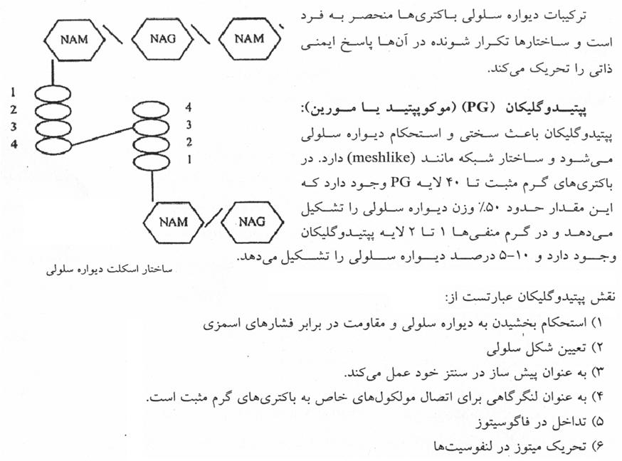
تصویر 3پپتیدوگلیکان از سه جزء اصلی تشکیل شده است:
واحدهای تکرارشوندهٔ N-استیلمورامیک اسید (N-acetylmuramic acid; NAM، در بعضی متنها NAMA) و N-استیلگلوکزآمین (N-acetylglucosamine; NAG، در بعضی متنها NAGA) با پیوند گلیکوزیدی β-1,4 به یکدیگر متصلاند. این اسکلت در باکتریها مشابه است.
این زنجیره به NAM متصل است و ترکیب آن میتواند بین گونهها تفاوت داشته باشد. در بسیاری از باکتریها، جایگاههای زنجیره چنیناند:
بنابراین، یکی از تفاوتهای معمول زنجیرهٔ پپتیدی گرم مثبت و گرم منفی، اسیدآمینهٔ جایگاه سوم است: معمولاً L-لیزین در گرم مثبت و meso-DAP در گرم منفی.
گروه آمین اسیدآمینهٔ سوم یک زنجیرهٔ تتراپپتیدی با گروه کربوکسیل اسیدآمینهٔ چهارم زنجیرهای دیگر پیوند برقرار میکند و شبکهای از زنجیرهها شکل میگیرد. این فرایند ترانسپپتیداسیون (transpeptidation) است و پروتئینهای متصلشونده به پنیسیلین (penicillin-binding proteins; PBP)، از جمله ترانسپپتیدازها، در آن نقش اصلی دارند. در برخی ساختارهای نمایشدادهشده، پل پپتیدی شامل واحدهای گلیسین است.
در اسلاید، مونومرهای پپتیدوگلیکان Escherichia coli و Staphylococcus aureus با یکدیگر مقایسه شدهاند.
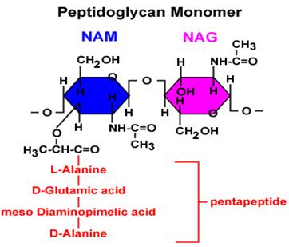
تصویر 5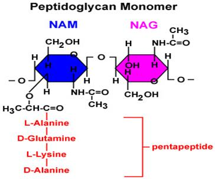
تصویر 6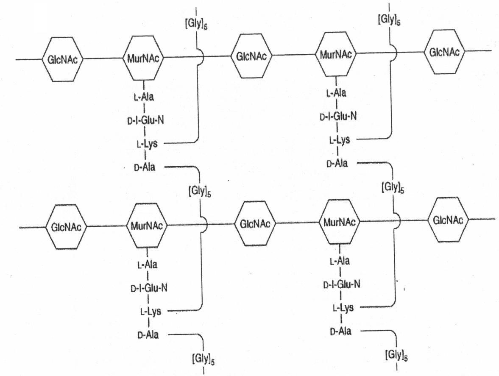
تصویر 7جزئیات ساختار برای شناخت محل اثر آنتیبیوتیکها اهمیت دارد. مونومرهای پپتیدوگلیکان در سیتوزول ساخته میشوند و با کمک مولکول ناقل غشایی باکتوپرنول (bactoprenol) از غشای سیتوپلاسمی عبور میکنند. باکتوپرنول مونومرها را به محل رشد دیواره میرساند و به واردشدن آنها در زنجیرههای در حال رشد کمک میکند.
مراحل تشکیل مونومر و اتصال آن به دیواره عبارتاند از:
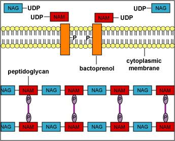
تصویر 9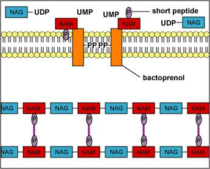
تصویر 10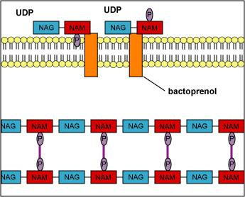
تصویر 11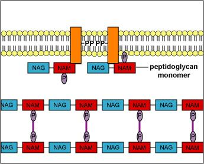
تصویر 12پنیسیلین از طریق اثر بر PBPها و جلوگیری از ترانسپپتیداسیون، تشکیل پیوندهای عرضی پپتیدی را مختل میکند. در صورت حضور پنیسیلین، بهسبب حلقهٔ بتالاکتام، آنزیم غیرفعال میشود و مونومرها به شبکهای پیوسته تبدیل نمیشوند.
باسیتراسین نیز در روند ایجاد پیوند قندی بین واحدها اختلال ایجاد میکند؛ در نتیجه، زنجیرهٔ قندی بهشکل معمول ساخته نمیشود.
در توضیح مدرس، لیزوزیم و پنیسیلین هر دو در ارتباط با اختلال در ساخت دیواره مطرح شدند و گفته شد که اگر پنیسیلین یا لیزوزیم به باکتری برسد و ترانسپپتیداز را غیرفعال کند، اتصالهای دیواره مختل میشوند.
در دیوارهٔ گرم مثبت، افزون بر پپتیدوگلیکان، تیکوئیک اسیدها (teichoic acids) وجود دارند. بعضی از این ساختارها کوتاهترند و در لایهٔ پپتیدوگلیکان قرار میگیرند؛ بعضی دیگر بلندترند و تا غشای سیتوپلاسمی امتداد دارند. دو نوع اصلی عبارتاند از:
تیکوئیک اسیدها به میخهایی تشبیه شدند که لایههای پپتیدوگلیکان را کنار هم نگه میدارند: نوعی که به غشا میرسد LTA و نوع کوتاهتر WTA است.
تیکوئیک اسیدها فقط در دیوارهٔ گرم مثبتها یافت میشوند. این پلیمرها از واحدهای ریبیتولفسفات یا گلیسرولفسفات ساخته شدهاند که با پیوندهای فسفودیاستر به هم متصلاند. معمولاً D-آلانین و نیز گروههای دیگری مانند گلوکز، گالاکتوز، N-استیلگلوکزآمین، N-استیلگالاکتوزآمین و سوکسینات میتوانند به گروههای هیدروکسیل گلیسرول یا ریبیتول متصل شوند. اسلاید سهم آنها را تا حدود ۵۰ درصد وزن دیواره و ۱۰ درصد وزن خشک کل سلول ذکر میکند؛ در برخی باکتریهای گرم مثبت، LTA نیز آنتیژن مهمی است.
تیکوئیک اسیدها از ساختارهای سطحیاند و میتوانند بهوسیلهٔ سیستم ایمنی شناسایی شوند و پاسخ آنتیبادی را برانگیزند. نقشهای ذکرشده برای آنها عبارتاند از:
فاژها ویروسهایی هستند که به باکتری حمله میکنند و میتوانند این ساختارها را شناسایی و به آنها متصل شوند.
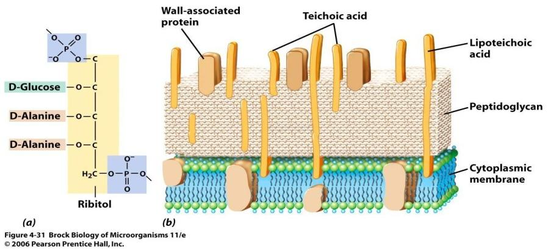
تصویر 14باکتری گرم منفی علاوه بر غشای سیتوپلاسمی (inner membrane)، لایهای نازک از پپتیدوگلیکان و غشای خارجی (outer membrane) دارد. فضای میان غشای داخلی و خارجی، فضای پریپلاسمیک (periplasmic space) است. در این فضا پروتئینهای انتقال مواد، آنزیمها و پروتئینهای متصلشونده به سوبستراها قرار دارند. برخی مواد بهوسیلهٔ این سامانهها از بیرون جذب میشوند و برخی دیگر از سیتوپلاسم به بیرون انتقال مییابند.
لایهٔ بیرونی پپتیدوگلیکان در گرم منفیها بهوسیلهٔ اجزایی مانند لیپوپروتئین براون (Braun’s lipoprotein) و پیوندهای غیرکووالانسی با غشای خارجی مرتبط است. طبق اسلاید، لیپوپروتئین براون:
این ساختار در کنار پروتئینهای فضای پریپلاسمیک و انتقال مواد توضیح داده شد.
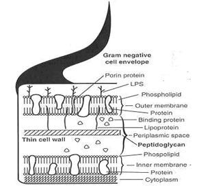
تصویر 16غشای خارجی دولایه و نامتقارن است: لایهٔ داخلی آن از نظر ترکیب به غشای سیتوپلاسمی شباهت دارد، اما لایهٔ خارجی آن دارای LPS است. جنس فسفولیپیدهای موجود در غشای خارجی، فسفاتیدیلاتانولآمین است. تنوع پروتئینهای غشای خارجی باکتریهای گرم منفی محدود است و این پروتئینها بهوسیلهٔ ریبوزومهای متصل به سطح غشای سیتوپلاسمی تولید میشوند. غشای خارجی با کمک لیپوپروتئین براون (پیوند کوالانسی) و نیز پورینها (پیوندهای غیرکووالانسی) به پپتیدوگلیکان متصل است.
غشای خارجی مانع عبور مولکولهای هیدروفوب میشود و به این ترتیب باکتری را از اثر اسیدهای صفراوی محافظت میکند. همچنین عبور آنتیبیوتیکهای بزرگ را محدود میکند؛ به همین دلیل مقاومت باکتریهای گرم منفی به آنتیبیوتیکها نسبتا بالاست. درحالیکه برخی مولکولهای آبدوست با وزن مولکولی پایین میتوانند از آن عبور کنند.
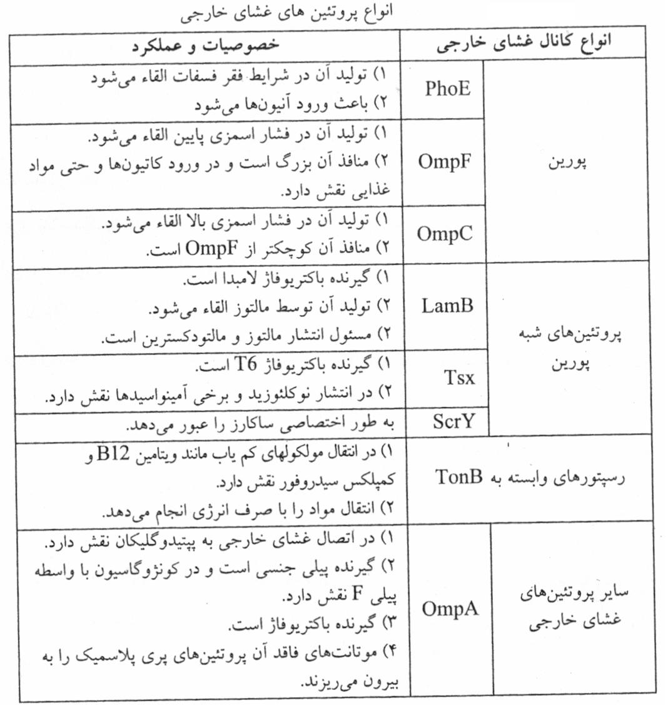
تصویر 19اتصالات بایر (Bayer’s junctions) در باکتریهای گرم منفی به انتقال پروتئینهای غشای خارجی و پیشسازهای کپسول کمک میکنند، غشای خارجی را به غشای داخلی متصل میسازند، در لیز ناشی از کمپلمان نقش دارند و محل تزریق DNA فاژ هستند. اتصالات بایر به نگهداشتن اجزای غشای داخلی، فضای پریپلاسمیک و غشای خارجی در کنار هم کمک میکنند.
فضای پریپلاسمیک محل وجود چند دسته ماده است:
در سطح خارجی غشای باکتریهای گرم منفی، لیپوپلیساکارید (lipopolysaccharide; LPS) قرار دارد که اندوتوکسین نیز نامیده میشود. LPS سه بخش دارد: لیپید A، بخش مرکزی (Core) و آنتیژن O (O antigen). برای بهخاطر سپردن ساختار، میتوان آن را به ریشه، ساقه و شاخههای یک درختچه تشبیه کرد.
لیپید A بخش درونغشایی و عامل سمیت LPS است. اسلاید آن را متشکل از واحدهای دیساکاریدی N-استیلگلوکزآمین، دو گروه فسفات و شش واحد اسید چرب توصیف میکند. اسید بتاهیدروکسیمیریستیک (β-hydroxymyristic acid)، اسید چرب ۱۴کربنهای است که همیشه در این مولکول حضور دارد؛ سایر اسیدهای چرب میتوانند میان گونههای مختلف تفاوت داشته باشند.
ورود لیپید A به جریان خون میتواند به تب شدید، شوک سپتیک و آسیب یا ازکارافتادن اندامهای حیاتی، از جمله کلیه و کبد، منجر شود. همچنین از واکنش شوارتزمن بهعنوان واکنشی همراه با تب، علائم شدید، آسیب بافتی و تحریک سیستم ایمنی یاد شد که میتواند مرگآور باشد.
بخش Core میان لیپید A و آنتیژن O قرار دارد و آنتیژن O را به LPS متصل میکند. بخش داخلی Core شامل فسفات، دو قند هپتوز و ۲کتو ۳دزوکسی اکتولوزونیکاسید تشکیل شده است. بخش خارجی آن شامل هگزوزها و قندهای دیگر است که در باکتریهای مختلف متنوع است.
از دسترفتن Core باعث ایجاد کلونی خشن (Rough) میشود.
آنتیژن O از واحدهای تکرارشوندهٔ الیگوساکاریدی ساخته میشود؛ این واحدها ممکن است خطی تریساکاریدی یا بهصورت تتراساکارید و پنتاساکارید شاخهدار باشند. توالی این پلیساکاریدهای تکرارشونده میان گونههای یک جنس متفاوت است و اختصاصیبودن آنتیژن O به واحدهای الیگوساکاریدی مربوط میشود.
باکتریهای گرم منفی بر اساس آنتیژن O گروهبندی و سروتیپبندی میشوند. آنتیژن O در سطح باکتری قرار دارد، خاصیت آنتیژنی دارد و بر ضد آن آنتیبادی ساخته میشود؛ همچنین میتواند گیرندهٔ فاژ باشد و در اتصال به سلول میزبان و مقاومت به فاگوسیتوز نقش داشته باشد. آنتیژن O بهوسیلهٔ آنزیم لیگاز به Core متصل میشود.
با از دست رفتن AgO، باکتریها از حالت صاف به خشن تبدیل میشوند.
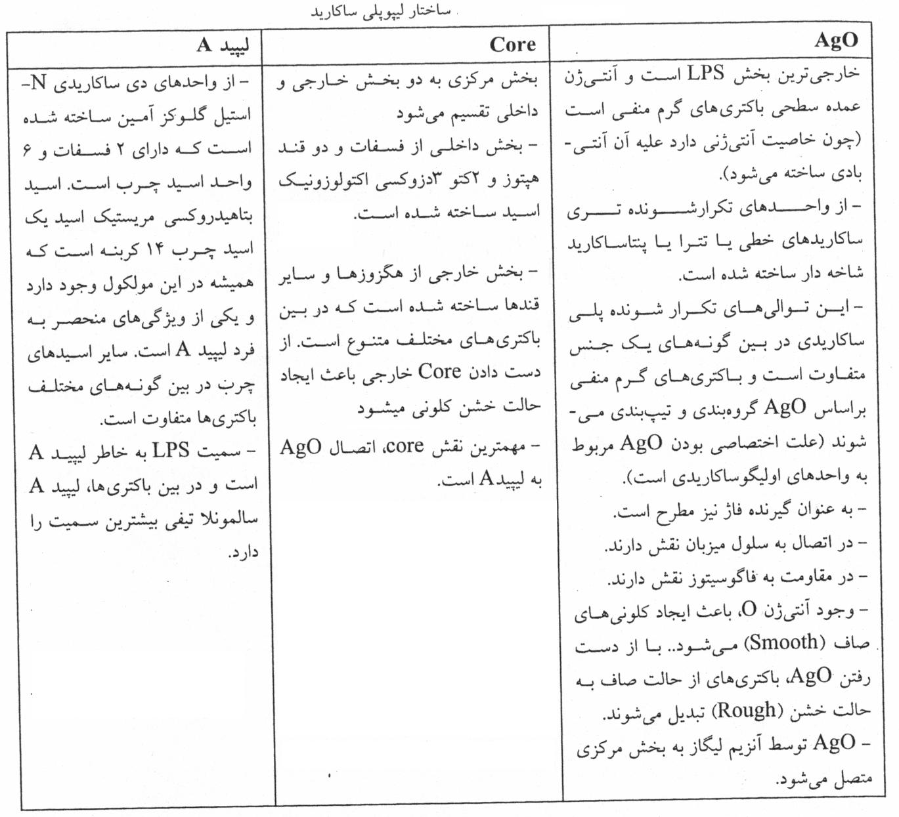
تصویر 23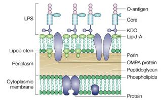
تصویر 24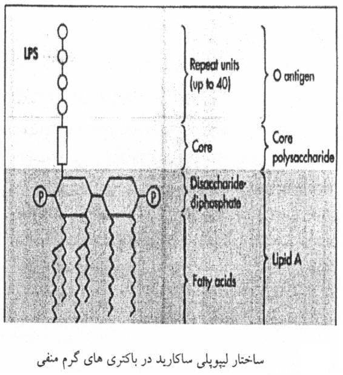
تصویر 25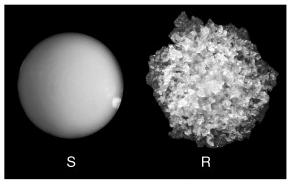
کلونی خشن و صافتیکوئیک اسید در گرم مثبتها و آنتیژن O در گرم منفیها از ساختارهای سطحی قابلشناسایی برای سیستم ایمنیاند و در سروتیپبندی اهمیت دارند. «سرو» به سرم و آنتیبادیهای موجود در آن اشاره دارد؛ در سرولوژی، آنتیبادیهای سرم بیمار بر ضد آنتیژنهای سطحی باکتری، ویروس یا انگل شناسایی میشوند.
برای نمونه، E. coli در رودهٔ انسان وجود دارد و بسیاری از سویههای آن بیماریزا نیستند، اما برخی سویهها حتی در تعداد کم میتوانند اسهال و گاستروانتریت ایجاد کنند. O157 نمونهای از سویههای شناختهشدهٔ بیماریزای E. coli است. یافتن E. coli در کشت مدفوع بهتنهایی نشان نمیدهد که سویهٔ جداشده بیماریزاست، زیرا این باکتری میتواند بخشی از فلور طبیعی روده باشد.
در چنین مواردی میتوان از تست سرولوژیک استفاده کرد:
در صورت نداشتن واکنش، باید سویههای طبیعی و نیز عوامل دیگری را که گاستروانتریت ایجاد میکنند، از جمله Bacillus یا Clostridium difficile، در نظر گرفت.
برای توضیح کاربرد بالینی، فردی که دچار اسهال و استفراغ شده است ممکن است گزارش کند غذایی خورده که چندین ساعت، مثلاً ۸ تا ۱۲ ساعت، در دمای محیط مانده است. در صورت شک به آلودگی یا مسمومیت باکتریایی، ممکن است کشت مدفوع درخواست شود؛ اما نتیجهٔ کشت و مشاهدهٔ E. coli بهتنهایی بیماریزا بودن سویه را مشخص نمیکند و سروتیپبندی میتواند به این تمایز کمک کند.
در جدول مقایسهٔ گرم مثبت و گرم منفی، LPS و اندوتوکسین در گرم منفیها وجود دارند و در گرم مثبتها وجود ندارند. کپسول در برخی سویههای هر دو گروه ذکر شده و تولید اگزوتوکسین نیز در برخی سویهها مطرح شده است.
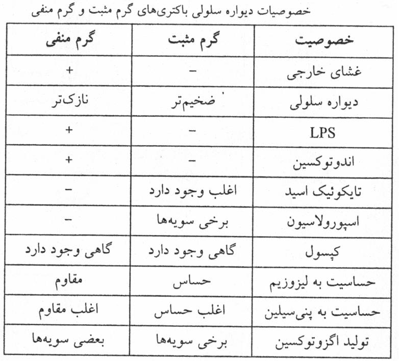
تصویر 27در توضیح درس گفته شد که اختلال در دیواره، چه بهعلت لیزوزیم، پنیسیلین یا عوامل بیرونی مانند تابش اشعه، ممکن است اتولیزینهای باکتری را فعال کند. اتولیزینها پیوندهایی را که قبلاً در دیواره تشکیل شدهاند تخریب میکنند. این فرایند بهطور تقریبی با proofreading هنگام همانندسازی DNA مقایسه شد: در صورت اختلال، ساختار باز میشود تا پیوندها دوباره برقرار شوند.
اگر مهار آنتیبیوتیکی طولانی باشد، فرصت بازسازی دیواره از بین میرود؛ اگر تماس کوتاه باشد، ممکن است پس از رفع اثر مهاری، باکتری برخی پیوندها را دوباره برقرار کند. در همین زمینه، بر مصرف آنتیبیوتیک با دوز کافی و تکمیل مدت درمان تأکید شد؛ قطع دارو پس از بهترشدن علائم میتواند فرصت بازسازی دیواره را فراهم کند.
باکتریهای گرم مثبت به پنیسیلین حساساند و گرم منفیها ممکن است مقاوم باشند؛ بنابراین، آنتیبیوتیکهای دارای حلقهٔ بتالاکتام که بر ساخت دیواره اثر میگذارند ممکن است برای گرم مثبتها مؤثر باشند، اما برای گرم منفیها لزوماً مؤثر نیستند.
لیزوزیم در بزاق تجمع دارد. انسان و حیواناتی مانند سگ و گربه ممکن است زخم را بلیسند؛ لیزوزیم بزاق میتواند بر بعضی از باکتریهای گرم مثبت مؤثر باشد.
رنگآمیزی گرم روشی ساده و سریع برای طبقهبندی باکتریها به گرم مثبت و گرم منفی است. این روش به نام Hans Gram، پزشک آلمانی، نامگذاری شده و بنا بر توضیح درس، حدود ۱۱۰ سال پیش ابداع شده است. چهار مادهٔ اصلی آن کریستال ویوله، ید یا لوگول (Lugol)، استون یا استونالکل و سافرانین (safranin) هستند. سافرانین رنگ قرمز دارد. رنگآمیزی گرم یکی از نخستین قدمها در میکروبشناسی تشخیصی است.
بدون رنگآمیزی، باکتریهای موجود در نمونههای بیرنگ، مانند بزاق یا ادرار، ممکن است کمرنگ و دشوار برای دیدن باشند؛ حتی اگر دیده شوند، تصویر ممکن است برای تشخیص کافی نباشد و نمیتوان بر اساس آن گرم مثبت یا گرم منفی بودن را تعیین کرد.
نمونه میتواند مستقیماً از بیمار گرفته شود، مانند خون، ادرار، چرک، مایع سینوویال، CSF یا ترشحات مجاری ادراری و تناسلی؛ یا از کلونی روی پلیت و نمونههای جامد یا نیمهجامد، مانند مدفوع، تهیه شود.
برای نمونهٔ نیمهجامد میتوان یک قطره سرم فیزیولوژی استریل افزود، نمونه را در آن حل کرد و با لوپ استریل بهصورت گسترهای کوچک و گرد روی اسلاید پخش کرد.
پس از تهیهٔ اسمیر، آن را خشک و با گرما فیکس میکنند: اسلاید را چند بار از روی شعله میگذرانند، نه اینکه روی شعله نگه دارند، زیرا نمونه ممکن است بسوزد. اسلاید باید فقط تا حدی گرم شود که پشت لام گرمای خفیفی داشته باشد و دست را نسوزاند.
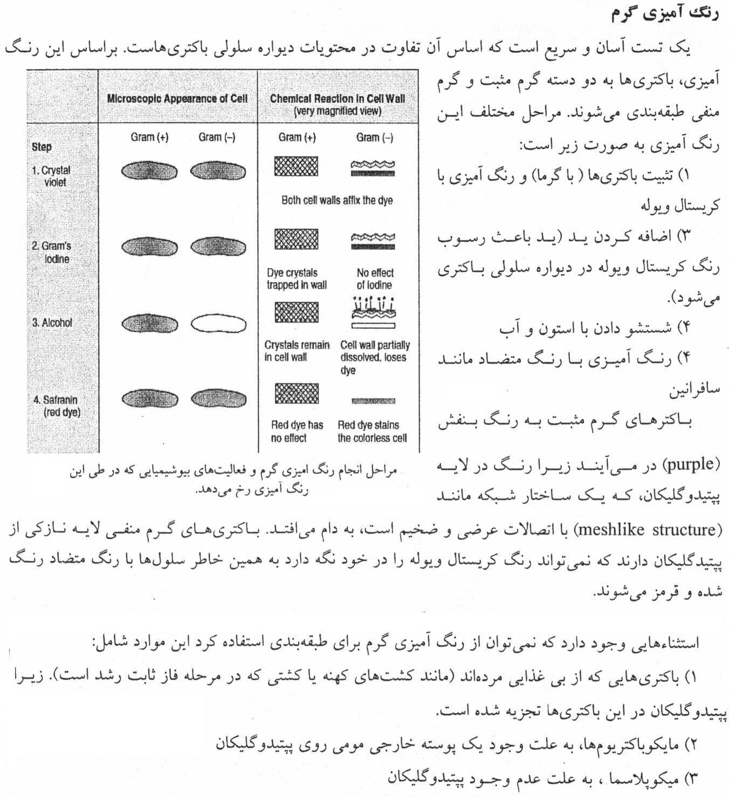
تصویر 28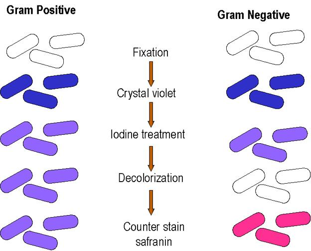
تصویر 29در مرحلهٔ کریستال ویوله، هم گرم مثبت و هم گرم منفی بنفش میشوند. مولکولهای رنگ از پوشش سلولی عبور میکنند؛ ید با کریستال ویوله کمپلکس بزرگتری تشکیل میدهد.
الکل در مرحلهٔ رنگبری بر غشاهای لیپیدی گرم منفی اثر میگذارد و آنها را مختل میکند. در پی آن، کمپلکس کریستال ویوله–ید از گرم منفی خارج و شسته میشود؛ بنابراین، گرم منفی بیرنگ میشود. گرم مثبت، با لایهٔ ضخیم پپتیدوگلیکان، کمپلکس رنگ را نگه میدارد و بنفش باقی میماند. سپس سافرانین بهعنوان رنگ متضاد وارد گرم منفی بیرنگشده میشود و آن را صورتی یا قرمز میکند. گرم مثبت بنفش میماند، هرچند ممکن است رنگ متضاد نیز تا حدی به آن نفوذ کند. در مشاهدهٔ نهایی، گرم مثبت بنفش و گرم منفی صورتی یا قرمز دیده میشود.
در اسلاید، مراحل با عنوانهای تثبیت، کریستال ویوله، تیمار با ید، رنگبری و رنگ متضاد سافرانین نمایش داده شدهاند. همچنین در توضیح تصویری، ورود هر دو رنگ اولیه به دیواره، تشکیل کمپلکس با ید، از دسترفتن رنگ در گرم منفی پس از رنگبری و حفظ رنگ در گرم مثبت نشان داده شده است.
مواردی وجود دارند که رنگآمیزی گرم برای طبقهبندی مناسب نیست یا نتیجهٔ آن گمراهکننده میشود:
خطا در هر مرحله ممکن است نتیجه را تغییر دهد:
برای کنترل کیفی، از سویههایی استفاده میشود که از قبل گرم مثبت یا گرم منفی بودنشان معلوم است؛ مانند E. coli، Klebsiella یا Pseudomonas برای گرم منفی و یک کوکسی از گروه Staphylococcus برای گرم مثبت. آزمایشگاه میکروبشناسی باید سویههای کنترل داشته باشد.
هر بار که مواد رنگآمیزی عوض میشوند، مواد جدید تهیه میشود، روش تغییر میکند یا فرد انجامدهنده عوض میشود، سویههای کنترل را با مواد و روش جدید رنگآمیزی میکنند. برای مثال، اگر Staphylococcus epidermidis که گرم مثبت است صورتی شود، درحالیکه باید بنفش باشد، باید علت را بررسی کرد؛ ممکن است زمان الکل بیش از حد یا زمان کریستال ویوله کوتاه بوده باشد.
زمانهای پیشنهادی همواره الزاماً دقیقاً یک دقیقه و ۱۵ ثانیه نیستند و ممکن است بر اساس پروتکل، مواد و نتیجهٔ سویههای کنترل تنظیم شوند؛ برای مثال، زمانی ممکن است از ۱۵ به ۲۰ یا ۳۰ ثانیه، یا از یک دقیقه به ۴۵ ثانیه تغییر کند.
در اسفروبلاست بر خلاف پروتوپلاست مقداری از پپتیدوگلیکان باقی میماند.
اشکال L ممکن است بهطور خودبهخود در بعضی باکتریها ایجاد شوند یا در شرایط خاص، از جمله مواجهه با عوامل شیمیایی، آنتیسرم، عوامل فیزیکی، لیزوزیم یا غلظتهای suboptimum آنتیبیوتیکها پدید آیند. خانم نوبل نخستین بار این اشکال را هنگام مطالعهٔ Streptobacillus moniliformis معرفی کرده است.
اشکال L در محیط هایپرتونیک زنده میمانند و تکثیر مییابند. پس از برطرفشدن عامل محرک، میتوانند دوباره دیواره بسازند و به حالت طبیعی برگردند. این اشکال در ایجاد عفونت مزمن و عود عفونت پس از بازگشت به حالت طبیعی نقش دارند و بهعلت نداشتن پپتیدوگلیکان به پنیسیلین مقاوماند.
مایکوپلاسما نیز فاقد دیواره است، اما در گروه پروتوپلاست، اسفروپلاست یا اشکال L قرار نمیگیرد. مایکوپلاسما و اشکال L از نظر رشد روی آگار و مورفولوژی شباهت دارند و ممکن است کلونیهایی شبیه تخممرغ نیمرو تشکیل دهند؛ اما اشکال L پس از رفع عامل محرک میتوانند دیواره بسازند، درحالیکه مایکوپلاسماها هرگز نمیتوانند پپتیدوگلیکان بسازند و از نظر ژنتیکی نیز با اشکال L متفاوتاند.
بحث جلسه با رنگآمیزی گرم به پایان میرسد؛ جلسهٔ بعد با مرور مطالب باقیمانده و بحث اسفروپلاستها و پروتوپلاستها ادامه خواهد یافت.
| ویژگی | گرم مثبت | گرم منفی |
|---|---|---|
| لایهٔ پپتیدوگلیکان | ضخیم؛ ممکن است تا ۴۰ لایه داشته باشد | نازک؛ معمولاً یک یا دو لایه |
| مقدار پپتیدوگلیکان در وزن دیواره | حدود ۵۰ درصد | ۵ تا ۱۰ درصد |
| غشای خارجی | وجود ندارد | وجود دارد؛ دولایه و نامتقارن |
| تیکوئیک اسید | وجود دارد | در دیواره وجود ندارد |
| LPS و اندوتوکسین | وجود ندارد | وجود دارد |
| کپسول | در برخی سویهها ذکر شده است | در برخی سویهها ذکر شده است |
| تولید اگزوتوکسین | در برخی سویهها مطرح شده است | در برخی سویهها مطرح شده است |
| رنگ نهایی در رنگآمیزی گرم | بنفش | صورتی یا قرمز |
| جزء یا جایگاه | شرح |
|---|---|
| اسکلت پلیساکاریدی | واحدهای تکرارشوندهٔ NAM و NAG با پیوند گلیکوزیدی β-1,4؛ این اسکلت در باکتریها مشابه است |
| جایگاه اول زنجیرهٔ پپتیدی | L-آلانین متصل به NAM؛ پیوند NAM و L-آلانین در اسلاید حساس به amidase معرفی شده است |
| جایگاه دوم | D-گلوتامیک اسید یا جایگزین آن |
| جایگاه سوم | متغیرترین جایگاه؛ معمولاً L-لیزین در گرم مثبتها و meso-DAP در گرم منفیها؛ در گرم مثبتها ممکن است DAP یا اسیدآمینهٔ دیگری نیز باشد |
| جایگاه چهارم | D-آلانین |
| پیوند عرضی | گروه آمین اسیدآمینهٔ سوم یک زنجیره با گروه کربوکسیل اسیدآمینهٔ چهارم زنجیرهٔ دیگر پیوند مییابد |
| آنزیمها و پروتئینهای مرتبط | PBPها، از جمله ترانسپپتیدازها، در ترانسپپتیداسیون نقش اصلی دارند؛ transglycosidaseها پیوند قندی را ایجاد میکنند |
| مرحله | رویداد |
|---|---|
| ۱ | NAG و NAM به UDP متصل میشوند و UDP-NAG و UDP-NAM را میسازند |
| ۲ | اسیدهای آمینه به UDP-NAM افزوده میشوند؛ دو اسیدآمینهٔ انتهایی D-alanine هستند که از L-alanine ساخته میشوند |
| ۳ | زنجیرهٔ اولیه پنتاپپتیدی است؛ هنگام انتقال D-alanine انتهایی جدا میشود و زنجیرهٔ نهایی تتراپپتیدی باقی میماند |
| ۴ | NAM-pentapeptide به باکتوپرنول متصل میشود؛ انرژی از یکی از گروههای فسفات پرانرژی UDP تأمین میشود |
| ۵ | NAG به NAM-pentapeptide متصل میشود و مونومر کامل میشود |
| ۶ | باکتوپرنول مونومر را از غشای سیتوپلاسمی عبور میدهد و به محل رشد دیواره میرساند |
| ۷ | transglycosidaseها پیوند قندی و transpeptidaseها پیوندهای عرضی را ایجاد میکنند |
| ماده | اثر ذکرشده در درس |
|---|---|
| پنیسیلین | اثر بر PBPها و جلوگیری از ترانسپپتیداسیون؛ تشکیل پیوندهای عرضی پپتیدی مختل میشود |
| باسیتراسین | اختلال در روند ایجاد پیوند قندی بین واحدها |
| لیزوزیم | در توضیح درس در ارتباط با اختلال در ساخت دیواره مطرح شده است؛ جزئیات مکانیسم در منبع روشن نیست |
| عوامل بیرونی مانند تابش اشعه | ممکن است اختلال در دیواره ایجاد کنند و اتولیزینها را فعال کنند |
| اتولیزینها | پیوندهایی را که قبلاً در دیواره تشکیل شدهاند تخریب میکنند |
| ویژگی | WTA | LTA |
|---|---|---|
| نام | تیکوئیک اسید دیوارهای (wall teichoic acid) | لیپوتیکوئیک اسید (lipoteichoic acid) |
| محل اتصال | گروه هیدروکسیل کربن شمارهٔ ۶ NAMA | گلیکولیپیدهای غشای سلولی |
| امتداد | نوع کوتاهتر و واقع در لایهٔ پپتیدوگلیکان | نوعی که تا غشا امتداد دارد |
| محل وجود | دیوارهٔ گرم مثبتها | دیوارهٔ گرم مثبتها و متصل به غشا |
تیکوئیک اسیدها از واحدهای ریبیتولفسفات یا گلیسرولفسفات ساخته میشوند. نقشهای ذکرشده برای آنها شامل مقاومت در برابر لیزوزیم و آنزیمهای تخریبکننده، اتصال به باکتریوفاژ، جذب Mg²⁺، جذب DNA و مشارکت در ترانسفورماسیون است.
| بخش | ویژگیهای مطرحشده |
|---|---|
| لیپید A | بخش درونغشایی و عامل سمیت LPS؛ شامل واحدهای دیساکاریدی N-استیلگلوکزآمین، دو گروه فسفات و شش واحد اسید چرب؛ β-hydroxymyristic acid اسید چرب ۱۴کربنهای است که همیشه حضور دارد |
| بخش مرکزی (Core) | میان لیپید A و آنتیژن O قرار دارد و آنتیژن O را به LPS متصل میکند؛ بخش داخلی شامل فسفات، دو هپتوز و KDO است؛ جزئیات KDO در متن OCR ناقص است |
| آنتیژن O | از واحدهای تکرارشوندهٔ الیگوساکاریدی ساخته میشود؛ در سروتیپبندی، شناسایی آنتیبادی، اتصال به سلول میزبان، مقاومت به فاگوسیتوز و اتصال فاژ نقش دارد |
| گروه باکتریایی | ساختار سطحی ذکرشده برای سروتیپبندی | نکتهٔ تشخیصی |
|---|---|---|
| گرم مثبت | تیکوئیک اسید | ساختار سطحی قابلشناسایی برای سیستم ایمنی |
| گرم منفی | آنتیژن O | برای گروهبندی و سروتیپبندی بهکار میرود؛ بر ضد آن آنتیبادی ساخته میشود |
| نمونه یا وضعیت | نکته |
|---|---|
| E. coli در کشت مدفوع | بهتنهایی بیماریزا بودن سویه را نشان نمیدهد؛ E. coli میتواند بخشی از فلور طبیعی روده باشد |
| O157 | نمونهای از سویههای شناختهشدهٔ بیماریزای E. coli |
| تست سرولوژیک | آنتیسرمهای اختصاصی آنتیژن O، مانند O1، O2، O5، O6 و O157، برای کمک به تشخیص الگوی آنتیژنی بهکار میروند |
| کشت منفی از نظر واکنش با آنتیسرم | باید سویههای طبیعی و عوامل دیگری مانند Bacillus یا Clostridium difficile نیز در نظر گرفته شوند |
| مثال غذایی | در مثال درس، فردی با اسهال و استفراغ غذایی را گزارش میکند که ۸ تا ۱۲ ساعت در دمای محیط مانده است |
| مرحله | ماده یا کار | زمان ذکرشده | نتیجه یا نکته |
|---|---|---|---|
| ۱ | کریستال ویوله؛ سپس شستوشوی ملایم با آب مقطر | حدود یک دقیقه | هر دو گروه بنفش میشوند |
| ۲ | ید یا لوگول؛ سپس شستوشو | حدود یک دقیقه | کمپلکس بزرگتر کریستال ویوله–ید تشکیل میشود |
| ۳ | استونالکل یا الکل رنگبَر؛ سپس شستوشو | حدود ۱۵ تا ۲۰ ثانیه | گرم منفی بیرنگ میشود؛ گرم مثبت کمپلکس رنگ را نگه میدارد |
| ۴ | سافرانین؛ سپس شستوشو | حدود ۱۵ تا ۲۰ ثانیه | گرم منفی صورتی یا قرمز میشود |
| ۵ | خشککردن در هوا و بررسی میکروسکوپی | — | گرم مثبت بنفش و گرم منفی صورتی یا قرمز دیده میشود |
| خطا | پیامد احتمالی ذکرشده |
|---|---|
| کوتاهکردن زمان کریستال ویوله | گرم مثبت بهاندازهٔ کافی رنگ نمیگیرد و ممکن است رنگ متضاد را بگیرد |
| حرارت یا شستوشوی بیش از حد | از دسترفتن رنگ یا آسیب به نمونه |
| طولانیکردن زمان الکل | گرم مثبت ممکن است کریستال ویوله را از دست بدهد و رنگ متضاد بگیرد |
| طولانیکردن زمان کریستال ویوله یا کوتاهکردن زمان استونالکل | گرم منفی ممکن است رنگ را نگه دارد و اشتباه گرم مثبت دیده شود |
| شکل یا گروه | وضعیت دیواره و شرایط مطرحشده | نکتهٔ متمایزکننده |
|---|---|---|
| پروتوپلاست | دیواره کاملاً از دست رفته است؛ با اثر لیزوزیم یا آنتیبیوتیک مؤثر بر دیواره بر گرم مثبت در محیط هایپرتونیک حاوی حدود ۲۰٪ ساکارز مطرح شده است | محیط هایپرتونیک به پایداری سلول فاقد دیواره کمک میکند |
| اسفروپلاست | برداشت ناقص دیواره یا آسیب غشای خارجی؛ پولیمیکسین و ساکارز در اسلاید مطرح شدهاند | یادت نره منو پر کنی! |
| اشکال L | ممکن است خودبهخود یا پس از مواجهه با عوامل شیمیایی، آنتیسرم، عوامل فیزیکی، لیزوزیم یا غلظتهای suboptimum آنتیبیوتیکها ایجاد شوند | در محیط هایپرتونیک زنده میمانند و تکثیر مییابند؛ پس از رفع عامل محرک میتوانند دیواره بسازند |
| مایکوپلاسما | فاقد دیواره و پپتیدوگلیکان است | برخلاف اشکال L نمیتواند پپتیدوگلیکان بسازد؛ از نظر ژنتیکی نیز متفاوت است |
تفاوت دیوارهٔ گرم مثبت و گرم منفی را از نظر تعداد لایههای پپتیدوگلیکان، وجود غشای خارجی و نتیجهٔ نهایی رنگآمیزی گرم توضیح دهید.
گرم مثبت پپتیدوگلیکان ضخیمی دارد که ممکن است تا ۴۰ لایه باشد و در رنگآمیزی گرم بنفش میماند. گرم منفی پپتیدوگلیکان نازکتری دارد، معمولاً یک یا دو لایه، و غشای خارجی آن دارای LPS است؛ پس از رنگبری بیرنگ میشود و پس از دریافت سافرانین، صورتی یا قرمز دیده میشود.
سه جزء اصلی پپتیدوگلیکان را نام ببرید و نقش اتصالهای عرضی را شرح دهید.
سه جزء اصلی عبارتاند از اسکلت پلیساکاریدی NAM و NAG، زنجیرهٔ جانبی تتراپپتیدی متصل به NAM و پیوندهای عرضی پپتیدی. پیوندهای عرضی با اتصال زنجیرهها شبکهای ایجاد میکنند که به دیواره استحکام میدهد؛ transpeptidaseها و PBPها در تشکیل آنها نقش دارند.
مراحل اصلی رنگآمیزی گرم را بهترتیب بنویسید و توضیح دهید چرا گرم منفی در پایان صورتی یا قرمز میشود.
ابتدا کریستال ویوله، سپس ید یا لوگول، بعد استونالکل یا الکل رنگبَر و در پایان سافرانین به کار میرود. الکل غشاهای لیپیدی گرم منفی را مختل میکند و کمپلکس کریستال ویوله–ید از آن خارج میشود؛ سافرانین وارد سلول بیرنگشده میشود و آن را صورتی یا قرمز میکند.
اجزای LPS را نام ببرید و دو ویژگی یا نقش آنتیژن O را شرح دهید.
LPS از لیپید A، بخش مرکزی (Core) و آنتیژن O تشکیل شده است. آنتیژن O در سروتیپبندی باکتریهای گرم منفی کاربرد دارد، بر ضد آن آنتیبادی ساخته میشود و میتواند گیرندهٔ فاژ باشد؛ همچنین در اتصال به سلول میزبان و مقاومت به فاگوسیتوز نقش دارد.
اشکال L و مایکوپلاسما را از نظر توانایی بازسازی دیواره و ارتباط با پپتیدوگلیکان مقایسه کنید.
اشکال L فاقد پپتیدوگلیکاناند، اما پس از برطرفشدن عامل محرک میتوانند دوباره دیواره بسازند و به حالت طبیعی برگردند. مایکوپلاسما نیز فاقد دیواره است، اما نمیتواند پپتیدوگلیکان بسازد و از نظر ژنتیکی با اشکال L متفاوت است.
کدام گزینه ترکیب معمول جایگاه سوم زنجیرهٔ تتراپپتیدی را درست بیان میکند؟
در بسیاری از گرم مثبتها جایگاه سوم L-لیزین و در اغلب گرم منفیها meso-DAP است.
کدام مولکول مونومرهای پپتیدوگلیکان را از غشای سیتوپلاسمی عبور میدهد؟
باکتوپرنول ناقل غشایی مونومرهاست و آنها را به محل رشد دیواره میرساند.
پنیسیلین در توضیح درس عمدتاً با اختلال در کدام فرایند مرتبط شده است؟
پنیسیلین از طریق اثر بر PBPها و جلوگیری از ترانسپپتیداسیون، تشکیل پیوندهای عرضی را مختل میکند.
کدام ویژگی دربارهٔ تیکوئیک اسیدها درست است؟
تیکوئیک اسیدها در دیوارهٔ گرم مثبتها یافت میشوند.
کدام گزینه دربارهٔ LTA درست است؟
LTA با پیوند کووالان به گلیکولیپیدهای غشای سلولی متصل است.
کدام بخش LPS عامل سمیت آن معرفی شده است؟
لیپید A بخش درونغشایی و عامل سمیت LPS معرفی شده است.
در رنگآمیزی گرم، کدام رویداد باعث بیرنگشدن گرم منفی میشود؟
در مرحلهٔ رنگبری، الکل غشاهای لیپیدی گرم منفی را مختل میکند و کمپلکس رنگ از آن خارج میشود.
کدام گروه بهعلت پوستهٔ خارجی مومی ممکن است با رنگآمیزی معمول گرم بهآسانی دیده نشود؟
ویژگی مومی مایکوباکتریومها نفوذ رنگ را دشوار میکند؛ در این موارد از رنگآمیزی اسیدفست استفاده میشود.
کدام گزینه دربارهٔ پروتوپلاست مطابق محتوای درس است؟
پروتوپلاست باکتریای است که دیوارهٔ سلولی خود را کاملاً از دست داده است.
کدام گزینه تفاوت اشکال L و مایکوپلاسما را درست بیان میکند؟
اشکال L میتوانند پس از رفع عامل محرک دیواره بسازند؛ مایکوپلاسماها نمیتوانند پپتیدوگلیکان بسازند.
تمام موارد نیازمند بررسی، بررسی و کادرهای مربوطه حذف گردید.
ادیتور: مهراد اسدی
منابع استفادهشده: اسلایدها و ویس ضبطشده کلاس
برآورد تقریبی تکمیل محتوا: حدود ۹۵٪